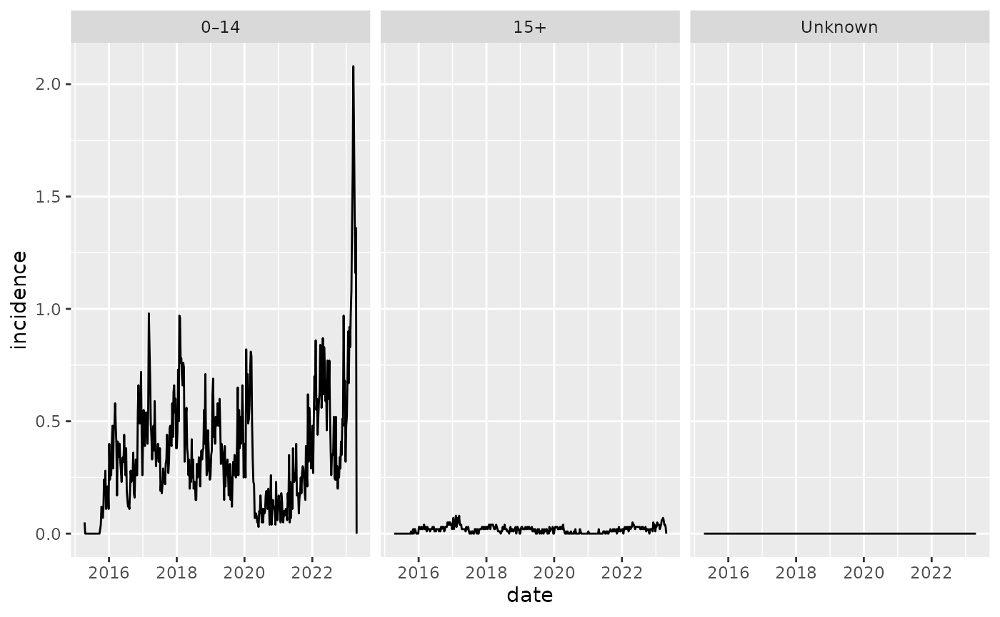
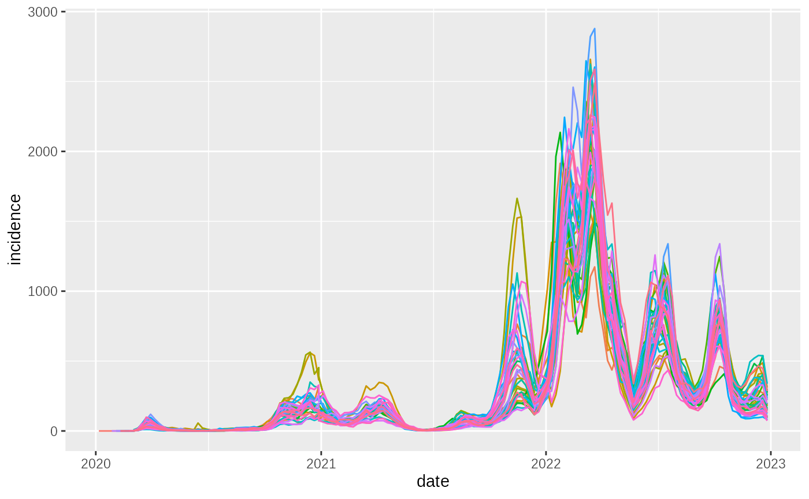
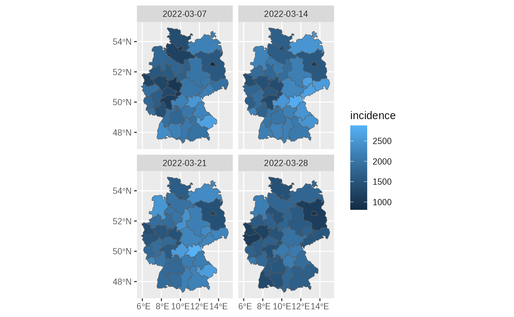

Age stratification example
Get some data stratified by age:
tmp = rsurvstat::get_timeseries(
diseases$Enterovirus,
"Count",
age_group = age_groups$zero_fifteen)Re-band age groups and plot:
tmp2 = tmp %>% dplyr::filter(!is.na(date))
ggplot(tmp2, aes(x=date, y=count)) + geom_line() + facet_wrap(~age_name)
Recover population denominator:
tmp3 = tmp %>% fit_population()
ggplot2::ggplot(
tmp3 %>% mutate(weekly_incidence_per_100K = count/population*100000),
aes(x=date, y=weekly_incidence_per_100K, colour=age_name)
) + geom_line()
Geography
Data can be retrieved by region. There are 3 levels of detail,
state, nuts and the most granular
county. This is an example of the incidence at NUTS2 level
(legend hidden):
covid_by_nuts = get_timeseries(disease = diseases$`COVID-19`,
measure="Incidence",
years = 2020:2022,
geography = "nuts"
)
ggplot2::ggplot(
covid_by_nuts,
aes(x=date, y=incidence, colour=geo_name)
) + geom_line() + guides(colour = guide_none())
Matching sf maps are supplied as data, that can be
joined to the SurvStat output:
# Pick a set of dates around the peak:
peak_date = covid_by_nuts$date[covid_by_nuts$incidence == max(covid_by_nuts$incidence)]
peak_date = peak_date+c(-14,-7, 0, 7)
peak = covid_by_nuts %>% filter(date %in% peak_date)
library(sf)
ggplot(
NutsKey71Map %>% inner_join(peak, by=c("Id" = "geo_code")),
aes(fill = incidence)
)+geom_sf()+facet_wrap(~date)
Disease subtype:
pneumo_by_serotype = get_timeseries(
disease = diseases$`Pneumococcus (IfSG`,
disease_subtype = TRUE,
years = 2024
)
ggplot(
pneumo_by_serotype %>% group_by(disease_subtype_name) %>%
summarise(count=sum(count)) %>% filter(startsWith(disease_subtype_name,"Sero")),
aes(x=disease_subtype_name, y=count)
)+geom_bar(stat="identity")+theme(axis.text.x = element_text(angle = 45,hjust=1))